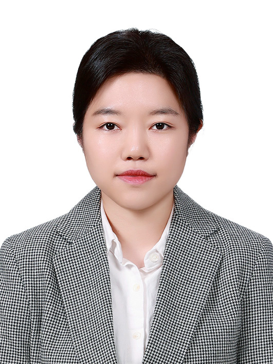

Soonyoung Cha

Summary
Dedicated and collaborative professional with experience in teaching and administration. Known for a strong team-oriented approach, consistently prioritizing collective goals. Committed to resilience and achieving results, demonstrating an unwavering work ethic and a focus on delivering impactful outcomes.
Education
- Bachelor of English Language and Literature with Teaching Certification - Soongsil University, Seoul, Republic of Korea (March 2010- Feb 2014)
Work Experience
Interpreter / Translater - Watchcop Corporation, Anyang, Republic of Korea
01 July 2015 - 26 Feb 2024
- Provided interpretation services in English and Korean during various meetings.
- Translated various Korean texts into English, including invoices, website content, and emails, as required.
- Responded to inquiries from international customers in English.
Part-Time English Teacher - Shinkwang Girl's Middle School, Seoul, Republic of Korea
16 March 2022 - 23 Nov 2022
- Taught 5 lesson periods of 7th grade English each week.
- Developed and implemented engaging lesson activities and materials aligned with course content to enhance student learning and comprehension.
Part-Time English Teacher - Ahyeon Middle School, Seoul, Republic of Korea
01 March 2023 - 18 July 2023
- Taught 5 lesson periods of 8th grade English each week.
- Developed and implemented engaging lesson activities and materials aligned with course content to enhance student learning and comprehension.
Full-Time English Teacher / School Club Manager - Younghoon International Middle School, Seoul, Republic of Korea
01 March 2024 - 28 Feb 2025
- Conceived and executed diverse learning activities to enrich students' understanding of English novels covered in the curriculum.
- Utilized Google Classroom as an administrative tool to distribute lesson materials and evaluate students' work.
- Implemented English performance assessments for 170 7th graders, ensuring accurate evaluation of students' understanding and progress.
- Crafted and administered final exam questions, ensuring transparency by informing each student of their scores to address potential concerns regarding their semester results.
- Managed 10 music and art clubs, including student assignments, responding to inquiries from instructors and students, and reporting enrollment changes to the main system (NICE).
- Assisted in the administration of the Christmas Concert, featuring music performances and art displays from 510 students, while raising funds from parents and VIPs for a Christmas charity.
- Procured various items for club activities and events, including the Christmas concert.
Skills
- Engaging Presentation Skills
- Effective Communication
- Collaborative Teamwork
- Dependability and Commitment
Awards and Certifications
- Grade 2 Teacher Certification (정교사 2급 자격증) - Obtained through completion of required teaching coursework (21 Feb 2014); qualifies for teaching positions in schools managed by the Korean government's educational department.
Other